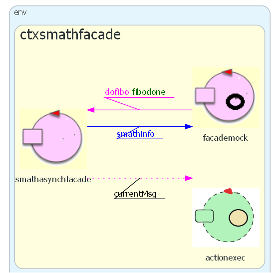
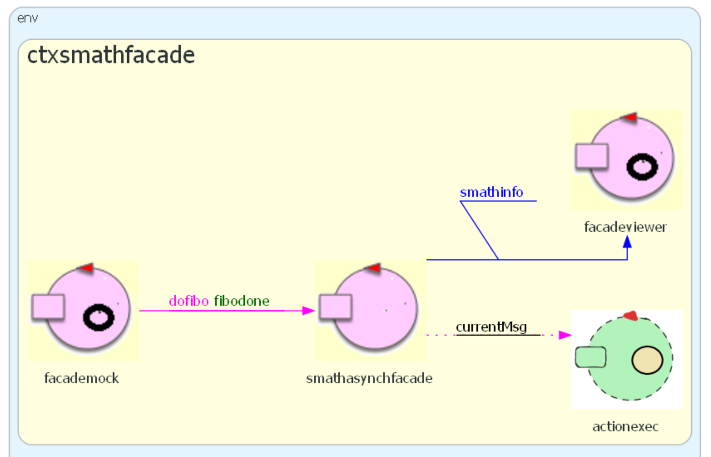
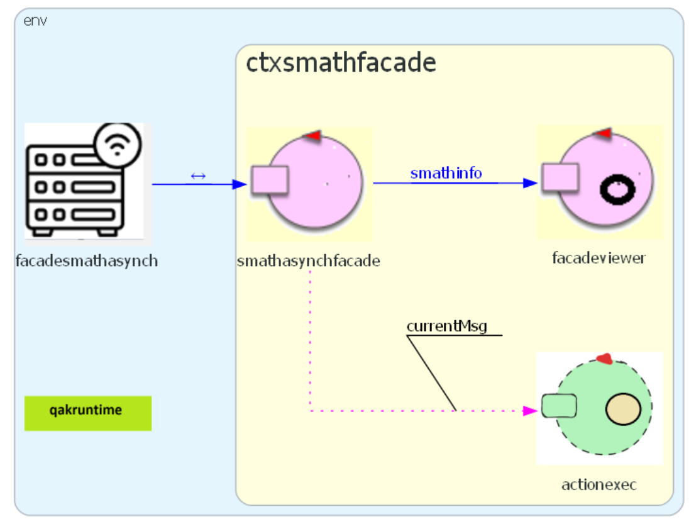

ServiceMath24Facade¶
ServiceMath24Facade Introduction¶
This is an update of the project described in ServiceMath24Asynch. that equips the service with a user Console and a Display.
ServiceMath24Facade-Requirements¶
The system smath24asynch must behave as described in ServiceMath24Facade-Requirements.
Moreover system must:
allow human users to send commands to the service through a Console
show the results of the user request on a Display
update the Display with information (if any) emitted ny the system using the primitve updateResource
ServiceMath24Facade-Requirements analysis¶
According to the principles of the Clean architecture, the system deployed in ServiceMath24Asynch is we build another system to reach the new requirements
ServiceMath24Facade-model from the Requirements¶
A first model of the service can be set as follows (smath24asynchfacadereq.qak):
|  |
|
{kind=link}
ServiceMath24Facade-Test plans¶
The test-plans for the service has been already introduced in SMath24Asynch-Test plans.
The testing of the Facade is done with the help of an human user.
ServiceMath24Facade-Problem analysis¶
The responsibility to add a Console and a Display to the service system,
is given to the facademock component:
the Console can be implemented as a simple text-based interface
the Display can be implemented by following the example reported in helloworld3 withobj
ServiceMath24Facade-Logical architecture¶
The model introduced in ServiceMath24Facade-model from the Requirements already captures the logical architecture of the system.
ServiceMath24Facade-Project¶
To simplify the code of the smathasynchfacade,
the model (smath24asynchfacadeproject.qak) of our project does introduce a new
actor facadeviewer to which smathasynchfacade delegates the handling the smathinfo dispatch.
This new actor makes use of the same display created (a a singleton) by facademock
according to the example reported in helloworld3 withobj.
|  |
|
{kind=link}
ServiceMath24Facade-Testing¶
Testing was already discussed in the ServiceMath24Facade-Test plans.
ServiceMath24Facade-Deployment¶
The deployment process is, at the moment, quite similar to PPS0-A first Deployment.
Our deploy directory id always C:/DidatticRun.
Leter, w’ll see ServiceMath24Facade-Deployment with Docker.
ServiceMath24Facade-Maintenance¶
We recall what said in Update the deployment.
ServiceMath24Facade with a Web facade¶
The model smath24asynchfacadeweb.qak adds a real web facade, that exploits a library already provided by unibo.
|  | The project of the Facade is
The description is in Facade24 |
{kind=link}
ServiceMath24Facade-Deployment with Docker¶
See: introDocker.
The version of the service deployed on Docker removes from the model the usage of the facademock and the Display.
Il file Dockerfile |
FROM openjdk:12.0.2
EXPOSE 8033
## ADD extracts the tar
ADD ./build/distributions/smath24asynchfacade-1.0.tar /
WORKDIR /smath24asynchfacade-1.0/bin
COPY ./*.pl ./
COPY ./*.json ./
CMD ["bash", "smath24asynchfacade"]
|
Creazione di una immagine di nome |
gradlew distTar
docker build -t smath24:1.0 . //NOTE THE DOT!!
|
Il file smath24.yaml |
version: '3'
services:
smath:
#image: docker.io/natbodocker/smath24:1.0
image: smath24:1.0
ports:
- 8033:8033/tcp
- 8033:8033/udp
- 8088:8088
|
ServiceMath24Facade: launch the image¶
Launch and activate:
docker run -it --rm --name smath24 -p8033:8033/tcp -p8088:8088/tcp -p8088:8088/udp smath24:1.0
Launch the bash shell:
docker run -it --rm --name smath24 -p8033:8033/tcp -p8088:8088/tcp -p8088:8088/udp --privileged smath24:1.0 /bin/bash
ServiceMath24Facade: using Composer¶
docker-compose -f smath24.yaml up
Using the service vie programs¶
Let us redo now the usage experiments reported in the project .